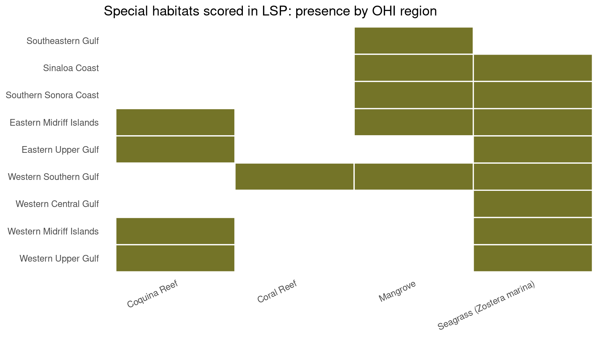

Sense of Place EWG 3.2
Sense of Place EWG 3.2
Early Look: Sense of Place (SP)
We plan to review our current estimates of SP scores at the Expert Working Group meeting 3.2 on August 13, 2026. This document is intended to provide attendees with an overview of the goal model and its inputs, and an early look at its outputs, leading up to the meeting. If you read through this and have minor methodological concerns, please flag them and bring them to the meeting. If you have major methodological concerns, please share them ahead of time (email smanos@nceas.ucsb.edu). If you cannot make it to the meeting but would like to discuss, I am happy to meet 1:1 before or after.
Please be advised that this document is intended for internal use only and informational purposes. It should not be interpreted as the final word or of peer-review quality.
Thank you for your continued engagement with this work. We look forward to discussing these scores with you on August 13th!
About the SP Goal
The Sense of Place goal (in Spanish, Sentido de Pertenencia) measures how well we are sustainably caring for the marine and coastal places and species that provide heritage, shared memory, and identity for Gulf communities.
The Ocean Health Index treats people as part of the ecosystem. Sense of Place focuses on cultural identity and belonging connected to the Gulf, not on tourism revenue (Tourism and Recreation; Livelihoods and Economies) and not on food tonnage (Food Provisioning).
CORE DEFINITION
- Focus: Sustainable care of places and species that sustain cultural identity and belonging
- Not about: Tourism revenue, commercial catch volume, or generic biodiversity alone
- Emphasis: Iconic species condition, lasting special places, and coastal community engagement
Goal model
The overall Sense of Place score is the equal weight arithmetic mean of three subgoals:
SP = average(CCE, LSP, ICO)
SP_{r,t} = \frac{CCE_{r,t} + LSP_{r,t} + ICO_{r,t}}{3}
where:
- SP_{r,t} is the Sense of Place score for region r in year t
- CCE_{r,t} is the Coastal Community Engagement score (beach adoptions and non-natural cultural places)
- LSP_{r,t} is the Lasting Special Places score
- ICO_{r,t} is the Iconic Species score
| Subgoal | What it measures |
|---|---|
| CCE | Coastal Community Engagement: beach adoptions (Ama tu Playa beach adoption program) and non-natural cultural places scaled to coastal population |
| LSP | Lasting Special Places: condition of EWG identified special places (protected areas, dive sites, fishing spots, archaeology, habitats, and other places) |
| ICO | Iconic Species: mean risk status of culturally iconic species occurring in each region |
Scores are calculated for each of the nine OHI Gulf of California regions. A score of 100 represents the reference point (ideal sustainable state). Where a subgoal has no value for a region year, the arithmetic mean uses the available subgoals (na.rm = TRUE).
Equal weights for CCE, LSP, and ICO are the current working choice. See Topics for discussion for confirmation with the group.
A note on English and Spanish naming
You may have noticed that we use Sense of Place and Sentido de Pertenencia together, even though pertenencia typically translates as “belonging.”
Early in a Goalkeeper meeting, we found a regional difference in what “Sense of Place” and “Sense of Belonging” convey. Historically, the Global Ocean Health Index has used Sense of Place for maintaining and promoting local communities’ identity and connection to the ocean. Based on feedback from the group, Sense of Belonging better reflected that same concept in Mexico.
We considered renaming the goal to Sense of Belonging to match the regional definition, but decided against it. In U.S. literature, Sense of Belonging usually describes the connection of individuals to their community, not the community’s connection to a place. Using that English goal name would risk losing the link to the ocean, which is what we want to evaluate.
With that in mind, the Goalkeeper group decided:
- In English, we still call it Sense of Place, to match the literature and English language understanding of the phrase.
- In Spanish, we call it Sentido de Pertenencia, to reflect the connection between a community and its lugar.
This naming choice was developed and supported by the Goalkeeper Group and was confirmed at the Expert Working Group meeting in January.
Overall Sense of Place scores
The overall SP current status score for each region and year is the arithmetic mean of that region’s CCE, LSP, and ICO scores.
Gulf-wide average SP current status
The same overall SP score averaged across all nine OHI Gulf of California regions for each year:
\text{SP}^{\text{GOC}}_{t} = \frac{1}{9}\sum_{r=1}^{9} SP_{r,t}
where SP_{r,t} is the regional Sense of Place score and the Gulf-wide line is their simple mean for year t. Compare this with the regional chart above to see whether Gulf-wide patterns are driven by a few regions or shared across the coast.
Coastal Community Engagement (CCE)
CCE captures coastal community engagement with beaches and non-natural cultural places that help people connect to the Gulf.
In the most recent Expert Working Group discussion, beach cleanups and adoption and the continued presence of non-natural cultural places were affirmed as appropriate CCE components. Indicators of support for coastal indigenous communities were also considered, but are not included in the current score. See Acknowledgment: Pueblos originarios below.
CCE_{r,t} = \mathrm{average}\big(Ama_{r,t},\; Cult_{r,t}\big)
where:
- CCE_{r,t} is the Coastal Community Engagement score for region r in year t
- Ama_{r,t} is the beach adoptions score (Ama tu Playa beach adoption program)
- Cult_{r,t} is the non-natural cultural places score
Missing values are ignored in the average. For example, Region 2 has no Ama tu Playa inventory beaches, so its CCE is driven by the cultural places layer alone.
Beach adoptions
The Ama tu Playa beach adoption program is part of Mexico’s Estrategia Nacional de Limpieza y Conservación de Playas y Costas de México 2025-2030, coordinated with SEMARNAT and partners. Organizations adopt a beach or coastal stretch and commit to keeping it clean through 2030, with the national goal of beaches free of plastic waste.
What we score: percent of SEMARNAT program inventory beaches that are already adopted in each OHI region (not kilograms of trash collected). More trash collected can mean either dirtier beaches or stronger cleanup effort, so adoption share is closer to the program’s own stewardship target.
Ama_{r,2025} = 100 \times \frac{\text{adopted beaches}_{r}}{\text{total inventory beaches}_{r}}
where:
- Ama_{r,2025} is the beach adoptions score for region r in 2025
- \text{adopted beaches}_{r} is the number of inventory beaches in that region that are already adopted
- \text{total inventory beaches}_{r} is the number of inventory beaches in that region
For 2019-2024, Ama_{r,t} = 0 because the campaign begins with the 2025-2030 strategy. Region 2 has no beaches in the program inventory after the spatial join to OHI regions and the inland 10 km buffer. That is not treated as a perfect score of 100 (absence from the inventory is not the same as plastic free). It is stored as NA with reason "no beaches in program inventory".
Data sources
- SEMARNAT Ama tu Playa beach inventory and adoption status from the national beach cleanup and conservation strategy catalog; adoption percent by OHI region
- Platform: adoptaunaplaya.com
Non-natural cultural places
This CCE layer measures human-made cultural establishments near the Gulf coast that support community connection to place.
Which cultural establishments are included?
We start from INEGI DENUE sector 71 (servicios de esparcimiento culturales y deportivos, y otros servicios recreativos) and keep establishments that function as cultural economic units with a meaningful coastal connection, within the inland 10 km coastal buffer of the six Gulf of California states.
Examples of establishment types retained
- Theaters and other performing arts venues
- Museums and cultural exhibition spaces
- Historic sites and related heritage establishments
- Botanical gardens and similar nature-culture venues
- Public parks and recreation spaces with cultural connection
- Marinas and related coastal recreation establishments that support place-based coastal use
Examples excluded
- Charreadas (for example establishments named LIENZO CHARRO)
- Cockfighting venues (for example GALLERA)
- Selected administrative businesses identified by name that do not represent community cultural engagement with the coast
The intent is to count places where people gather around coastal culture, heritage, and recreation, not every establishment that happens to fall under the broad DENUE recreation sector.
How the layer was built
- Start with INEGI DENUE sector 71 for 2019-2026.
- Restrict to the six GoC states and keep only establishments inside the inland 10 km coastal buffer.
- Curate to cultural economic units with a meaningful coastal connection (see dropdown above for what is included and excluded).
- Estimate employees from DENUE employment size classes, aggregate by region and year, and divide by coastal locality population within the same 10 km buffer.
- Convert the per capita rate to a 0 to 100 status using the 75th quantile of employees per capita across all regions and years as the reference:
Cult_{r,t} = \min\left(100,\; 100 \times \frac{\text{employees per coastal pop}_{r,t}}{Q_{0.75}(\text{employees per coastal pop})}\right)
where:
- Cult_{r,t} is the non-natural cultural places score for region r in year t
- \text{employees per coastal pop}_{r,t} is estimated cultural-establishment employees divided by coastal locality population in the inland 10 km buffer
- Q_{0.75}(\text{employees per coastal pop}) is the 75th quantile of that rate across all regions and years
- Scores above 100 are capped at 100
Yes, both the establishments and the population are coastal. Establishments are restricted to the inland 10 km coastal buffer, and population is from localities intersecting that same buffer (not whole municipalities inland of the Gulf).
Years: 2019-2026, from the updated DENUE cultural places prep (non_natural_cultural_places_2019_2026_goc_10km.shp). The temporary 2025-from-2024 gapfill is no longer used.
Data sources
- INEGI DENUE sector 71 cultural and recreation establishments within the inland 10 km coastal buffer; employees estimated from DENUE size classes, scaled to coastal locality population, referenced to the 75th quantile; series through 2026
Why the 75th quantile (not the 90th)?
Before converting to a current status score, the raw employees-per-coastal-resident rates already show that the Western Midriff Islands (Region 2) sit far above the other regions. Using a high reference like the 90th quantile would make that outlier dominate the benchmark and pull most other regions toward very low scores. The 75th quantile still rewards higher cultural employment density, but is less driven by Region 2 alone.
The plot below shows the raw rate (not yet scaled to 0-100). Horizontal lines mark the pooled 75th and 90th quantiles across all region-year observations.
The 75th quantile reference is still an open discussion item. See Topics for discussion.
Acknowledgment: Pueblos originarios
Why this section exists
This section records a methodological and ethical decision: coastal indigenous communities are central to the Gulf of California, but we did not feel comfortable scoring their Sense of Place and connection to the ocean with indicators we designed without sustained partnership with community representatives.
Pueblos originarios and other First Nations communities of the Gulf of California hold deep, living relationships with coastal and marine places. Those relationships are not a side note to Sense of Place. They are part of what Sense of Place means in this region.
At the same time, indigenous peoples are not a single box. They are also coastal residents, fishers, knowledge holders, and neighbors within the same seascapes that the Index tries to describe. We do not want to isolate them from the Index, and we also do not want to impose an outside framework for assessing the condition of their connection to the ocean.
What we considered for CCE
During goal development, we explored indicators of support for coastal indigenous communities, including ideas such as:
- Recognition, for example whether there are government documents that provide translations between coastal pueblo originario languages and español (as a possible signal of recognition).
- Planes de justicia and Justice and Integral Development Plans from INPI for coastal pueblos originarios, described by INPI as planning exercises carried out by Traditional Authorities through their own forms of government and decision making, with INPI support for regional diagnoses, proposals from community visions of well being and justice, and follow up on agreements with government agencies.
- Indigenous development centers that receive federal funding, compared with the population size of First Nations (INEGI), as a possible signal of institutional support.
Dr. Ben Wilder also proposed framing support around two practical questions: (1) is the community recognized by the government, and (2) do they have funding support and centers?
Why these indicators are not in the current score
After discussion, we decided not to include these indicators in the published CCE score for this assessment cycle, because:
- We did not have the time and resources to keep indigenous groups in continuous conversation throughout Index development in the way this topic requires.
- We do not want to presuppose community condition, or publish a score that implies a community “should” want a particular form of recognition (for example language policy) when we have not heard that from their representatives.
- There are important nuances. For example, the Tohono O’odham communicated to one of the experts in our working group, as part of a separate project, that it does not want to be considered a pueblo originario. Any indicator built only on official categories would miss that kind of self determination.
- We received pushback against counting the number of indigenous resource centers. That framing would treat government financial support for a community meeting and resource location as automatically “positive,” but we do not know whether that is a good thing unless we speak with the pueblos originarios themselves. Expert Working Group discussion confirmed beach cleanups and continued presence of non-natural cultural places for CCE, while use of indigenous development centers remained in question.
Because of this, the language recognition, justice plans, and indigenous development center components were moved to Tier 3: ideas that would ideally be incorporated in the next time the assessment is run, but currently are not indicators we are ready to score as if they represent community values.
What we are doing instead
For this assessment:
- The current CCE model focuses on beach adoptions (Ama tu Playa beach adoption program) and non-natural cultural places scaled to coastal population.
- We are asking the funder to invite community representatives to the stakeholder meeting, as we will for other coastal communities such as fishers, and to learn from that conversation before designing any indigenous specific scoring approach.
- We hope that future iterations of the Gulf of California Ocean Health Index can incorporate co developed indicators if communities choose to participate. The Index is meant to be reassessed over time, and methods should keep improving as relationships and capacity grow.
Invitation for EWG 3.2
We welcome guidance from the Expert Working Group on:
- How to keep acknowledging pueblos originarios clearly on the website and in communications without extracting or scoring what we have not been invited to score.
- How stakeholder invitations can be respectful, practical, and community led.
If you have contacts, cautions, or preferred language for this acknowledgment, please email me.
Lasting Special Places (LSP)
LSP measures how well we are protecting places that the Expert Working Group identified as lasting special places for ecological, cultural, recreational, spiritual, or aesthetic reasons.
How LSP was built
Experts identified special places. The Expert Working Group identified lasting special places across the Gulf. We then grouped those places into types (special protected areas, priority dive sites, iconic fishing spots, archaeological sites, special habitats, and all other special places).
We overlaid protections. We overlaid the coordinates of those special places with the potential protections that would keep them preserved, available, and well managed for future generations to continue to enjoy them (for example CONANP and Ramsar protected areas, ZRP, TURF, INAH regulation, and other legal protections).
Not all protections are equal. Legal protections alone were generally given lower protection condition scores than more direct forms of management. Protected areas were scored using SIMEC i-efectividad (and Ramsar management plan presence where relevant). In other words, the score reflects how well a place is protected, not only whether a protection label exists on paper.
LSP_{r} = \mathrm{average}\big(\text{condition of LSP categories present in region } r\big)
where:
- LSP_{r} is the Lasting Special Places score for region r
- Each category condition is the protection condition assigned to that category’s special places in the region (protected areas, dive sites, fishing spots, archaeological sites, special habitats, and all other special places)
- The region score is the unweighted arithmetic mean across the LSP categories that have features in that region
Assessment year: 2025 snapshot (shown as bars because there is a single year)
For preliminary scores by region and category, and an overview of the decision making used to obtain each score, see this Google Sheet: LSP preliminary scores and decision overview.
Expert-identified lasting special places
Below are the cleaned place lists used to calculate LSP current status (from the processed condition tables), grouped by type. These are preferred over the raw EWG inventory sheet, which still contains duplicates and superseded entries. Expand a dropdown to see the unique names in that group.
Special Protected Areas (33)
Cleaned protected-area features used in the LSP current status (preferring WDPA or SIMEC names when available).
- Alto Golfo De California Y Delta Del Río Colorado
- Alto Golfo De California Y El Pinacate
- Área De Refúgio Para La Protección De La Vaquita
- Bahía De Loreto
- Balandra
- Cabo Pulmo
- Cabo San Lucas
- Canal Del Infiernillo Y Esteros Del Territorio Comcaac
- Complejo Lagunar Bahía Guásimas - Estero Lobos
- Constitucion De 1857
- El Vizcaíno
- Humedales De Bahía Adaír
- Humedales De La Laguna La Cruz
- Humedales De Yavaros - Moroncarit
- Humedales Del Delta Del Río Colorado
- Isla Isabel
- Isla Rasa
- Isla San Pedro Mártir
- Islas Del Golfo De California
- Islas Marietas
- La Tovara
- Laguna Huizache Caimanero
- Loreto Ii
- Marismas Nacionales Nayarit
- Meseta De Cacaxtla
- Revillagigedo
- Sierra De San Pedro Martir
- Sierra La Laguna
- Valle De Los Cirios
- Whale Shark Area De Refugio In La Paz
- Zona Marina Bahía De Los Ángeles, Canales De Ballenas Y De Salsipuedes
- Zona Marina Del Archipiélago De Espíritu Santo
- Zona Marina Del Archipiélago De San Lorenzo
Priority Dive Sites (147)
Cleaned dive-site names used in the LSP current status, with coordinates.
- Abanicos (23.004123, -109.708393)
- Amarradero (20.699884, -105.564854)
- Anegada (22.878553, -109.898835)
- Arco San Lucas (22.876139, -109.892835)
- Bajo De 90 (22.986792, -109.72093)
- Bajo De Cristo (20.547706, -105.290045)
- Bajo De La Manta (20.697459, -105.554919)
- Bajo Subamrino (27.9248782, -111.0384671)
- Ballena (24.482352, -110.399837)
- Beach (27.973833, -111.378059)
- Boulders (27.976535, -111.379436)
- Caletas (20.5066503, -105.371673)
- Candeleros (26.13708676, -111.273796)
- Cardonal (23.776415, -109.698226)
- Cascadas Arena (22.878545, -109.898992)
- Cascalitas (27.97469475, -111.3788795)
- Cave (27.958699, -111.365516)
- Cerro Colorado (22.991613, -109.716543)
- Chimo (20.481298, -105.586843)
- Colomitos (20.516622, -105.322874)
- Corbetena (20.71617309, -105.5842856)
- Coronado Punta Blanca (26.137812, -111.265291)
- Corralito (24.413737, -110.355639)
- Dedo Neptuno (22.877203, -109.895233)
- Deer Island (27.95491645, -111.1193596)
- Devil’S Jaw (20.54663106, -105.2918422)
- Eagle Rock (27.93376389, -111.064107)
- El Canon Arcos (20.54758, -105.293994)
- El Choyudo (28.73784167, -112.3032333)
- El Morro (20.67365342, -105.6753305)
- El Sequedal (20.74100302, -105.5856541)
- Ensenada Grande (28.0560685, -111.2435427)
- Escalera (23.045429, -109.672404)
- Fang Ming (24.44472222, -110.3813889)
- Ferry Salvatierra (24.383475, -110.31107)
- Frenchie’S Cove (27.93701533, -111.0915806)
- Gordo Banks (22.982495, -109.491503)
- Hiasystack (27.90998767, -110.9708256)
- Himalaya (28.148131, -111.316354)
- Himalaya Norte (28.14805556, -111.3161111)
- Honeymoon Island (27.94736756, -111.0315352)
- Iglesias (20.489867, -105.555732)
- Isla Cangrejo (21.048717, -105.275218)
- Isla Coral (21.039084, -105.277389)
- Isla De Cardones (27.974981, -111.120856)
- Isla De Lobos (23.184078, -106.439943)
- Isla De Los Chivos (23.186823, -106.435992)
- Isla Habana (25.12979312, -110.8615286)
- Isla Pajaros (23.25805, -106.473701)
- Isla Santa Ines (27.04196599, -111.9030962)
- Isla Tortuga (27.43194109, -111.9044443)
- Isla Venados (23.238416, -106.463435)
- Islote Gallina (24.45681656, -110.3829638)
- Islote Gallo (24.46730467, -110.3875701)
- La Caverna (27.95960914, -111.3807678)
- La Gringa 1 (27.88521632, -110.9552783)
- La Gringa 2 (27.87607899, -110.9529126)
- La Ventana (27.976803, -111.389417)
- Lagrimas (26.10368207, -111.2606638)
- Lajas (26.1248791, -111.2585762)
- Lands End (22.8760368, -109.8926353)
- Lapas 03 (24.47848, -110.395671)
- Ligth House (27.868177, -110.948414)
- Ligthhouse (27.982751, -111.383109)
- Lobera (22.875782, -109.89452)
- Lobera (26.12799027, -111.2591709)
- Los Anegados (20.67806452, -105.6414263)
- Los Arcos (20.54526703, -105.2910226)
- Los Barriles (23.68758034, -109.6839084)
- Magdalena Bay (27.9537, -111.364675)
- Majahuitas (20.506828, -105.390147)
- Marietas (20.69036333, -105.5868666)
- Martini Cove (27.93121646, -111.0590445)
- Middle Wall (22.878493, -109.897701)
- Mogote (24.18384, -110.344379)
- Naufragio (22.874629, -109.894758)
- Naufragio Albatun (28.05969322, -111.2538676)
- Naufragio Diaz Ordaz (28.04570951, -111.2333778)
- Naufragio Salinar (23.061708, -109.620336)
- Palapa (27.98287306, -111.1482131)
- Pared Marietas (20.697569, -105.569136)
- Pared Norte (22.87904181, -109.8995769)
- Pargo Via (24.144266, -109.79333)
- Piunta Tierra Firme (26.09754839, -111.2953038)
- Pizota (20.502746, -105.542846)
- Playa Norte (23.208607, -106.424038)
- Playa Oro (28.73784167, -112.3032333)
- Point (22.876063, -109.892588)
- Punta Agujas (26.88518718, -111.7949242)
- Punta Alta (25.01386461, -110.7561692)
- Punta Arena Cb (23.560218, -109.456169)
- Punta Arenas (24.045807, -109.825966)
- Punta Balandra (26.01624812, -111.1728923)
- Punta Bella (22.995487, -109.717363)
- Punta Blanca (25.06028487, -110.8243674)
- Punta Bufellero (27.27357319, -112.0843512)
- Punta Chivato (27.06711478, -111.9419438)
- Punta Colorada (26.37094823, -111.416248)
- Punta Colorada Cb (23.587959, -109.503708)
- Punta Concepcion (26.90296133, -111.8150549)
- Punta Coyote 2 (24.33385026, -110.2288245)
- Punta El Bajo (26.10096671, -111.3218477)
- Punta Hornitos (26.87270724, -111.7729808)
- Punta La Manga (27.97454955, -111.1333819)
- Punta La Piedrita (26.74803403, -111.8729316)
- Punta Langosta (27.13695401, -112.0663589)
- Punta Las Navajas (24.39957381, -110.32673)
- Punta Los Patos (26.13326471, -111.2622746)
- Punta Mangle (26.28323591, -111.3624287)
- Punta Maria (26.85098391, -111.7417078)
- Punta Martir (28.375353, -112.316013)
- Punta Mercenarios (26.37467865, -111.4035496)
- Punta Norte (27.98511699, -111.3894367)
- Punta Ostiones (25.03495831, -110.7159842)
- Punta Palmilla (23.00791, -109.71075)
- Punta Pelicano (27.965302, -111.385039)
- Punta Pericos (24.015304, -109.805971)
- Punta Pescadero (23.80199867, -109.6841011)
- Punta Pulputo (26.51895887, -111.4225418)
- Punta San Antonio (26.54035505, -111.4556606)
- Punta San Basilio (26.39293889, -111.4164801)
- Punta San Lino (26.74305569, -111.6227609)
- Punta San Pedro (28.0518267, -111.2529969)
- Punta Santa Maria (27.36208881, -112.2658136)
- Punta Santa Rosa (26.78697273, -111.6633686)
- Punta Santa Teresa (26.70164475, -111.5584067)
- Punta Sur (24.137704, -109.801338)
- Punta Sur (27.95142109, -111.3660049)
- Punta Tepetates (27.12192055, -112.0083947)
- Reina (24.444991, -109.949275)
- Reinita (24.388762, -109.939961)
- Repollo (26.13759191, -111.2698097)
- Roca Montana (24.1259, -109.794079)
- Roca Swany (24.391116, -110.304853)
- San Antonio Point (27.93625569, -111.1064588)
- San Idelfonso Punta Norte (26.64822028, -111.4349997)
- San Juan Nepomuceno (24.30042677, -110.3386967)
- South Wall (22.877737, -109.896293)
- The Little Waterfall (27.961243, -111.368235)
- The Rookery (27.955821, -111.374735)
- Tijeretas (26.11774263, -111.2603297)
- Tres Marias (27.93493042, -111.076905)
- Turner (28.715522, -112.291984)
- Window Rock (27.93462748, -110.9917581)
- Yelapa (20.503029, -105.462692)
- Zacatitos (23.07721, -109.572098)
- Zorro’S Cave/Lalo Rock (27.93434148, -111.0972645)
Iconic Fishing Spots (7)
Cleaned fishing-spot features used in the LSP current status, with OHI region labels.
- Corredor San Cosme - Punta Coyote - Network of Fishing Refugia - AHW (Western Southern Gulf)
- El Pardito - Iconic Fishing community - AHW (Western Southern Gulf)
- Extreme tides expose massive clam beds RCB, these clams beds are very important for the local economy of El Golfo de Santa Clara and San Felipe, there is a group of fishers called “almejeros” who go down there to collect clams, conditions are very difficult due to the mud, so not everyone can do this job (JGH), see this youtube video: https://www.youtube.com/watch?v=ulG_bbX6C3kJGH (Western Upper Gulf)
- Extreme tides expose massive clam beds. RCB (Eastern Upper Gulf)
- Los Frailes - Marine Trench and important fishing - AHW (Western Southern Gulf)
- Santa Rosalia in known for its mining history and french influence, also for its squid fishery - AHW (Western Central Gulf)
- Yaqui and Mayo People have historic (and current) important fishing camps at Sonora-Sinala border. RCB (Southern Sonora Coast)
Archaeological Sites (20)
Cleaned archaeological and coastal cultural features used in the LSP current status, with OHI region labels. Sites labeled as Puerto Peñasco shell middens follow Rick Brusca’s recommendation to include the large ancestral O’odham coastal cultural deposits near Puerto Peñasco (among the largest Native American coastal cultural material deposits in Sonora, dating to at least about 6,000 bp). Context: ResearchGate figure set, Puerto Peñasco Archaeology and Paleoenvironment Project, and related University of Arizona Press material.
- Archaeological sites on Islas San Lorenzo and Ángel de la Guarda, BW (Western Midriff Islands)
- CUMULO DE coNCHAS DE OSTION CULTURA TOTORAME (Southeastern Gulf)
- El Golfo Local Biota (=Pleistocene fossil deposits of “El Golfo Badlands”) aka “El Golfo local paleobiota”; mostly fresh water and brackish water of Colorado River Delta (freshwater aquatic, shrub and brush woodland, and savannah-like grassland) RCB, BW (Eastern Upper Gulf)
- EL ROBLITO (Southeastern Gulf)
- Isla San Esteban, there are arqueological remains fo the Comcaac culture, BW (Eastern Midriff Islands)
- LA PIEDRA DE LA VIRGEN, / O PIEDRA DEL CRISTO DEL MAR. Important for the huichol people, they recognize as the point of origin of their people (https://visitnayarit.travel/en/blog-nayarit-en/tatei-haramara-the-origin-of-the-world-according-to-the-wixarika-worldview/) (JGH) (Southeastern Gulf)
- Las Labradas (Sinaloa Coast)
- Los Dolores - Mision - AHW (Western Southern Gulf)
- Puerto Peñasco shell midden (ancestral O’odham coastal deposit): Duna Larga (Eastern Upper Gulf)
- Puerto Peñasco shell midden (ancestral O’odham coastal deposit): Locus 2 (Eastern Upper Gulf)
- Puerto Peñasco shell midden (ancestral O’odham coastal deposit): Locus 3 (Eastern Upper Gulf)
- Puerto Peñasco shell midden (ancestral O’odham coastal deposit): Locus 64 (Eastern Upper Gulf)
- Puerto Peñasco shell midden (ancestral O’odham coastal deposit): Locus 7 (Eastern Upper Gulf)
- Puerto Peñasco shell midden (ancestral O’odham coastal deposit): Los Tábanos (Eastern Upper Gulf)
- Puerto Peñasco shell midden (ancestral O’odham coastal deposit): Moruá (Eastern Upper Gulf)
- Puerto Peñasco shell midden (ancestral O’odham coastal deposit): Ojo de Agua (Eastern Upper Gulf)
- Puerto Peñasco shell midden (ancestral O’odham coastal deposit): Otolith Hills 1 & 2 (Eastern Upper Gulf)
- Puerto Peñasco shell midden (ancestral O’odham coastal deposit): Oyster Hill (Eastern Upper Gulf)
- Punta Borrascosa/Punta Gorda Pleistocene marine fossil deposits RCB, BW (Eastern Upper Gulf)
- Sierra San Francisco cave paintings (many murals are of marine species from the Gulf of California) BW (Western Central Gulf)
All other Special Places (37)
Cleaned marine locations of importance and other special places used in the LSP current status.
- Bahía Concepción notably rich in biodiversity and uncommon habitats such as rhodolith beds. RCB, BW
- Bahia Concepoción important sea grass beds of Zostera marina, the annual type, no perennial, JTC., BW
- Bahia de Banderas marine mammals hot spot.
- Bahia de los Angeles is an important feeding site sea turtles (L: olivacea and C. mydas), JTC. BW
- Bahia de los Angles is an important area for whale sharks, JTC. BW
- Bahía Ohuira
- Bahia San Basillio - Important anchorage and protection bay - AHW, BW
- Bahía San Pedro, BW
- Blue whales region in Loreto, JTC, bW
- Canal de Ballenas a deep channel were fin whales visit year around, JTC. BW
- Canal de Infiernillo key for Branta geese during winter, thounsands arrive (JTC). BW
- Cañón Barajitas, Sierra el Aguaje, BW
- Cañón del Nacapule, Sierra el Aguaje, BW
- Estuaries throughout the Canal del Infernillo - AHW, (BW: yes, on coasts of Isla Tiburón and mainland)
- Gulf grunion (endemic to this specific area). RCB, BW
- Historically important freshwater springs, pozos, of Bahía Adair. RCB, BW
- Historically important salt flats of Bahía Adair. RCB, BW
- Important clam beds in this region. RCB
- Important sea lions colonies, JTC
- La bocana. the mouth of the colorado river but inland, a special place for local fishermen, from delta communities including the cucapah. JGH
- La Paz and El Mogote sand spit are historically famous (e.g., Steinbeck-Ricketts expedition, etc.). RCB, BW
- Las Glorias
- Living stromatolite colonies (BW, yes, and stromatolite beds on Isla San Lorenzo)
- Living stromatolite colonies occur on Isla Ángel de la Guarda. RCB,
- PLAYA DEL NOVILLERO
- PLAYA DEL REY
- Puertocitos hot springs in GoC, BW
- Punta Arena, just N of Cabo Pulmo, BW
- Punta Cirio, just south of Puerto Libertad, most accesible cirio populations in Sonora, BW
- Río Santa Rosalía (at Mulegé) is only large perennial river on Baja’s gulf coast. RCB
- Rock arch and sea stacks at Cabo San Lucas. RCB
- San Pedro Martir Island, the most oceanic island in the Gulf of California, the third or fouth colony of sea lions, and hundreds of thousands of boobies birds aming other species nest there. The best conserve sahura forest in the Sonoran Desert, among other unique features, JTC., BW
- Santa Rosa Estuary in Bahia de Kino - AHW, BW
- Tastiota estuary - AHW, BW
- Totoaba and corvina (mainstays of economy). RCB Note originally from Region 1, but that location has been cut: “Coordinate indicate center of totoaba & corvina spawning range, which is in our Area 5 (not in Area 1), so these species might be deleted from this region ALTHOUGH some fishers from San Felipe (Regiion 1) do cross the Gulf to fish for them. Also species range througout most of the Gulf (when not in spawn). RB” Duplicated note in Region 5: “An important feeding area for sharks when there are totoaba and corvina aggregations. There are records of white sharks and other species, JTC.”
- Vaquita. RB
- Vaquita. RCB, BW
Special Habitats (18)
Summarized by habitat type and OHI region (presence only, not individual polygon IDs, feature counts, or area). Regional habitat condition in the score is an unweighted mean across features. See the static chart below for a visual overview.
- Coquina Reef in Eastern Midriff Islands
- Coquina Reef in Eastern Upper Gulf
- Coquina Reef in Western Midriff Islands
- Coquina Reef in Western Upper Gulf
- Coral Reef in Western Southern Gulf
- Mangrove in Eastern Midriff Islands
- Mangrove in Sinaloa Coast
- Mangrove in Southeastern Gulf
- Mangrove in Southern Sonora Coast
- Mangrove in Western Southern Gulf
- Seagrass (Zostera marina) in Eastern Midriff Islands
- Seagrass (Zostera marina) in Eastern Upper Gulf
- Seagrass (Zostera marina) in Sinaloa Coast
- Seagrass (Zostera marina) in Southern Sonora Coast
- Seagrass (Zostera marina) in Western Central Gulf
- Seagrass (Zostera marina) in Western Midriff Islands
- Seagrass (Zostera marina) in Western Southern Gulf
- Seagrass (Zostera marina) in Western Upper Gulf

Example map: special protected areas
We include one interactive map as an example: the special protected areas used in LSP, shown as full polygons and colored by their protection condition. That condition is primarily SIMEC i-efectividad, with Ramsar management-plan rules applied where relevant (see the protected-area condition approach below).
We do not host a separate full-polygon map for every LSP type on this page. Embedding several detailed Leaflet layers (especially large habitat footprints such as mangroves) previously exhausted the website build’s JavaScript memory. The cleaned name lists above remain the inventory reference for dive sites, fishing spots, archaeological sites, other special places, and habitats; spatial review of those layers is better done in the prep scripts or GIS, not as many heavy widgets here.
Map: Special Protected Areas (polygons by protection condition)
Polygons are lightly simplified for the website. Click a polygon for the protected-area name and condition score.
Protected-area map unavailable here (needs the dissolved GoC protected-area shapefile on Mazu at render time).
Condition approach by LSP category
Below is a simplified version of how condition was assigned within each category. Within a category, we generally check for the strongest applicable protection first, then move to weaker or more general protections if needed.
Special Protected Areas
These are CONANP and Ramsar areas that experts indicated are special for ecological reasons.
- Prefer SIMEC i-efectividad (48 indicators in 5 components) when available.
- For Ramsar sites, also account for management plan presence (RMPP):
- Plan exists: use the maximum i-efectividad value used for this comparison
- Plan in progress: score = 60
- No plan: use the minimum i-efectividad value used for this comparison
Priority Dive Sites
These are dive spots identified in Arcos-Aguilar et al. 2021 and GCMP that would benefit most from protection.
- If the dive site falls in a CONANP and/or Ramsar protected area, use SIMEC and RMPP condition for that area.
- If it falls in both CONANP and Ramsar, take the maximum of the two condition scores.
- If it is outside protected areas, assign the minimum i-efectividad observed across dive sites that do have a protected-area score (currently 58). This is a proxy default for unprotected sites, not a claim that unprotected dive sites are 58% “managed.” See Topics for discussion.
- Note: NOM-012-TUR-2016 section 6.11 requires dive operators to brief clients on environmental protection.
Iconic Fishing Spots
These are historically important fishing coordinates indicated by experts.
- If the site is in a zona de refugio pesquero (ZRP): score = 100.
- Else if the site is in a TURF: score = 100.
- Else use SIMEC and RMPP if the site overlaps a relevant protected area.
- In the current table logic, a no-take setting without the protections above is treated as 0.
Archaeological Sites
These are places where remains make the surrounding natural area culturally and spiritually special.
- If regulated by INAH: score = 100.
- Else if overlapping SIMEC and RMPP protections apply: use those scores.
- Else if only “codified protection” applies: score = 30.
- Legal reference: Ley Federal sobre Monumentos y Zonas Arqueológicos, Artísticos e Históricos (1972).
Special Habitats
These include seagrasses, mangroves, coquina reefs, and coral reefs.
- Prefer SIMEC and RMPP when the habitat overlaps managed protected areas.
- Else use codified legal protections.
- Most legal protections currently score around 70 (for example coral, with stronger dedicated legal hooks).
- Coquina currently scores 30 as a legal-floor default when it is outside stronger site-based management, because there is no dedicated coquina habitat statute (only weaker, more indirect legal coverage). See Topics for discussion.
- Relevant references include NOM-022-SEMARNAT-2003, Código Penal Art. 420bis, Ley General de Vida Silvestre, NOM-059, LGEEPA, LFRA, and CITES.
All other Special Places
These are expert-identified places that did not fit cleanly into the categories above (often recreational, ecological, and aesthetic places).
- Prefer SIMEC and RMPP when available.
- Else use codified protections.
- These were reviewed individually and may still benefit from further expert feedback.
The dive site unprotected default of 58 and the coquina legal-floor score of 30 are open discussion items. See Topics for discussion.
Iconic Species (ICO)
ICO measures the condition of species that are culturally iconic for Gulf communities.
What experts were asked to do
When building the iconic species list, experts were asked to review the “Iconic Species List” tab and consider three things:
- Are all “iconic species” in the Gulf of California listed?
- If not, please add the species name, common name, and reason for being iconic.
- Please write any notes about the species that can help rationalize its inclusion as an iconic species when the final report is written.
Reasons for being iconic
- Local ethnic or religious practices (could include traditional activities such as fishing, hunting, or commerce)
- Existence value
- Locally recognized aesthetic value (for example touristic attractions or common subjects for art such as whales)
Habitat forming species and species harvested only for utilitarian commerce are outside this definition.
How ICO risk weights are assigned
For each species s in region r and year t, assign one risk weight w_{s,r,t} using this hierarchical decision:
- Prefer NOM-059 when the species is listed under a risk category.
- If NOM-059 treats the species as not listed (weight 1.0), then prefer IUCN when available.
- If IUCN is not available, use CITES.
- Special cases were reviewed when lists conflicted (especially Pacific vs Atlantic IUCN assessments, or when NOM-059 says not listed but IUCN or CITES indicate elevated risk for Gulf-relevant populations).
Then:
ICO_{r,t} = 100 \times \mathrm{mean}_{s \in r}\big(w_{s,r,t}\big)
where:
- ICO_{r,t} is the Iconic Species score for region r in year t
- w_{s,r,t} is the risk weight for species s in that region and year (from NOM-059, IUCN, or CITES as above)
- The mean is taken across iconic species occurring in the region, then multiplied by 100 so the score is on a 0 to 100 scale
NOM-059 weights
| Category | Meaning | Weight |
|---|---|---|
| Not listed | Species not listed under NOM-059 risk categories | 1.00 |
| Pr | Special protection | 0.75 |
| A | Threatened | 0.50 |
| P | Endangered | 0.25 |
| E | Probably extinct in the wild | 0.00 |
IUCN Red List weights
| Category | Meaning | Weight |
|---|---|---|
| LC (and former LR/lc) | Least Concern | 1.00 |
| NT (and former LR/nt) | Near Threatened | 0.75 |
| VU | Vulnerable | 0.50 |
| EN | Endangered | 0.25 |
| CR | Critically Endangered | 0.12 |
| EX | Extinct | 0.00 |
| DD | Data Deficient | Not assigned a weight in the current prep (treated as missing for weighting) |
CITES Appendix weights
| Appendix | Meaning | Weight |
|---|---|---|
| Not listed | Species not listed under a CITES Appendix | 1.00 |
| III | Species protected in at least one country that has asked other CITES Parties for assistance in controlling trade | 0.75 |
| II | Species not necessarily threatened with extinction now, but that may become so unless trade is closely controlled | 0.50 |
| I | Species threatened with extinction; international trade is generally prohibited except in exceptional circumstances | 0.25 |
Species occurrence points (presence and absence with coordinates from Dr. Hem Nalini Morzaria-Luna) were intersected with OHI marine regions and the inland 10 km buffer to assign regions. Risk status time series were assembled from NOM-059 (2010, 2019, 2021, 2025 draft), IUCN, and CITES.
Data source: Expert Working Group iconic species list; species occurrence from Dr. Hem Nalini Morzaria-Luna; risk status from NOM-059-SEMARNAT, IUCN Red List, and CITES. Hierarchical decision as above; then mean risk weight across species in each region times 100.
Years: 2010-2025 (plot below focuses on the CCE overlapping window used in the SP merge, plus the full series for context)
Version 2 iconic species list edits are done for now. If anyone feels strongly about big changes, please tell me (Sophia); feedback can be incorporated after EWG 3.2.
Review materials:
Topics for discussion
Please discuss these items with the group at EWG 3.2:
Equal weights for CCE, LSP, and ICO. Confirm whether equal weights are the final intended policy choice, or whether any subgoal should be weighted differently.
75th quantile rationale for cultural employees. Discuss whether the 75th quantile remains the preferred reference for cultural employees per coastal resident, given that the Western Midriff Islands (Region 2) have a much higher raw rate than other regions and would dominate a 90th quantile benchmark. Alternatives explored include the 80th quantile, 90th quantile, and a 2019 regional baseline.
Dive site unprotected default (58) and coquina legal floor (30).
- Dive sites outside protected areas currently receive 58, which is the minimum SIMEC i-efectividad among dive sites that do fall in scored protected areas. In plain terms: if a priority dive site is not inside a managed protected area, we are temporarily assigning it the lowest protected-area effectiveness score observed among protected dive sites, rather than 0 or 100. NOM-012-TUR-2016 requires dive operators to brief clients on environmental protection, but that briefing requirement is not treated as equivalent to site management effectiveness. Please confirm whether 58 is still the intended unprotected default, or whether EWG 3.2 prefers a different rule (for example a lower legal-floor score, NA, or another fixed value).
- Coquina reefs currently receive a legal-floor condition of 30 when they lack stronger site-based management. That score reflects the judgment that coquina has no dedicated habitat statute and only weak or indirect legal coverage, in contrast with stronger floors used for habitats with clearer dedicated protections (for example mangroves and coral). Please confirm whether 30 is still the intended coquina floor, or whether it should be revised.
Iconic species list. Version 2 list edits are done for now. If anyone feels strongly about big changes, please tell me (Sophia); feedback can be incorporated after EWG 3.2. Review:
Discuss the questions raised within the Acknowledgment: Pueblos originarios section.